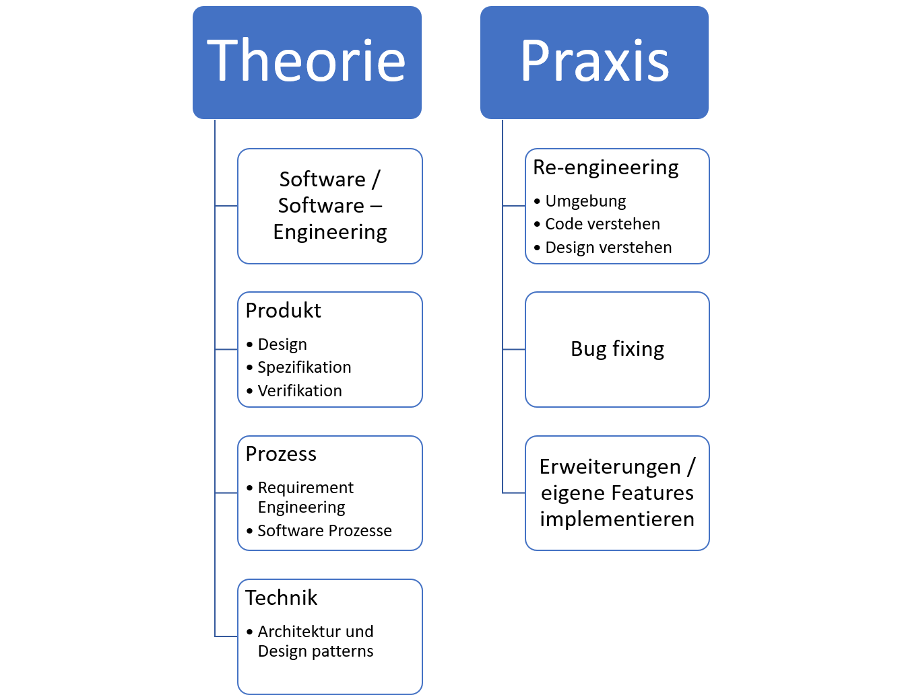
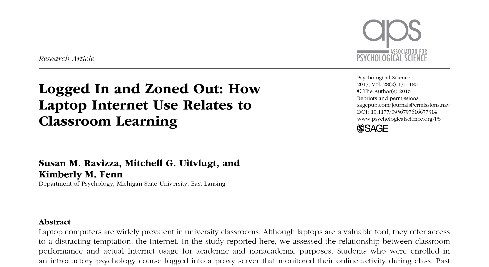

Software Engineering
Marcel Lüthi Departement Mathematik und Informatik
Meine Vorstellung vom Kurs
Nicht so:Meine Vorstellung vom Kurs
Sondern so:Plan für heute
- Allgemeines zum Kurs
- Warum brauchen wir Software Engineering
- Was ist Software Engineering
- Lesen wissenschaftlicher Artikel
- Ev. Geschichte des Software Engineerings
- Allgemeines zum Kurs -
Marcel Lüthi Departement Mathematik und Informatik
Wer bin ich?
- Marcel Lüthi
- Dozent 75 % (seit August)
- Mitarbeiter in der Graphics and Vision Research Group
- Forschung im Bereich Medizinischer Bildanalyse
Mein erster Kurs auf Bachelorniveau.
Mini CV
| Jahr | Funktion |
|---|---|
| 1994-1997 | Kaufmännische Berufslehre |
| 1997-2002 | Anwendungsentwicklung UBS (E-banking) |
| 1999-2003 | Informatikstudium FH Bern |
| 2003-2005 | Master in Ingenieursmathematik Chalmers Tekniska Högskolan |
| 2006-2017 | Forschung im Bereich Medizinische Bildanalyse |
Open source

- Framework zur Modell-basierten Bildanalyse
- Programmiert in Scala
Tutoren
Silvan Heller
Marvin Buff
Kursziele
Bauen

- Gebaut ca 2500 a.d.
- Höhe: 146m
- Arbeiter: Hundertausende
- Bauzeit: 20 Jahre
Engineering

- Gebaut 1930
- Höhe: 381m
- Arbeiter: ca. 3000
- Bauzeit: 11 Monate
Kursziele (1)
Softwareentwicklung als Ingenieursdisziplin zu verstehen
Software engineering?

"Quite a bit of today's software and its construction process resemble the Egyptian pyramid, but I would dare to say no one currently knows how to organize 3000 programmers to make a major piece of software from scratch in less than 11 months."
Alan Kay, 2001
Kursziele (2)
Schwierigkeiten und Limitierungen in der Softwareentwicklung zu verstehen.
Pop culture
Computing spread out much, much faster than educating unsophisticated people can happen. In the last 25 years or so, we actually got something like a pop culture, similar to what happened when television came on the scene and some of its inventors thought it would be a way of getting Shakespeare to the masses. But they forgot that you have to be more sophisticated and have more perspective to understand Shakespeare. What television was able to do was to capture people as they were. So I think the lack of a real computer science today, and the lack of real software engineering today, is partly due to this pop culture.
Allan Kay, 2004
Kursziele (3)
- Die Fundamente und Geschichte von Software Engineering kennenzulernen
- Lernen " Modeerscheinungen " von fundamentalen Konzepten zu unterscheiden.
Geschichte
Experiment: Lesen und diskutieren von wichtigen wissenschaftlichen Artikeln
Praktische Anwendung

- Praktische Arbeiten an einem Open Source Projekt
- Benutzung moderner Methoden / Werkzeuge
Plan
Literatur
Empfehlung:
(Älter aber gut)

Aktuelles Standardwerk
(Kompendium)

- Weitere Literaturhinweise auf Kurswebpage
Vorlesungszeiten
-
Vorlesungen:
- Mittwoch: 8.15 - 10.00
- Seminarraum 05.002, Spiegelgasse 5
- Mittwoch: 13:15-15.00
- Seminarraum 05.002 , Spiegelgasse 5
Übungen
- Praktische Arbeiten an Ganttproject
- Theoriefragen und lesen von Artikeln
Aufwand: ca. 6 Stunden pro Woche.
Leistungsüberprüfung
Schriftliche Prüfung am 17.1.2018 Semesters.
- Aktive Teilnahme an den Übungen
- Mindestens 75 % der Übungen eingereicht
- Mitarbeit am Programmierprojekt
Anmeldung unter https://courses.cs.unibas.ch/
Laptops
Kurswebpage